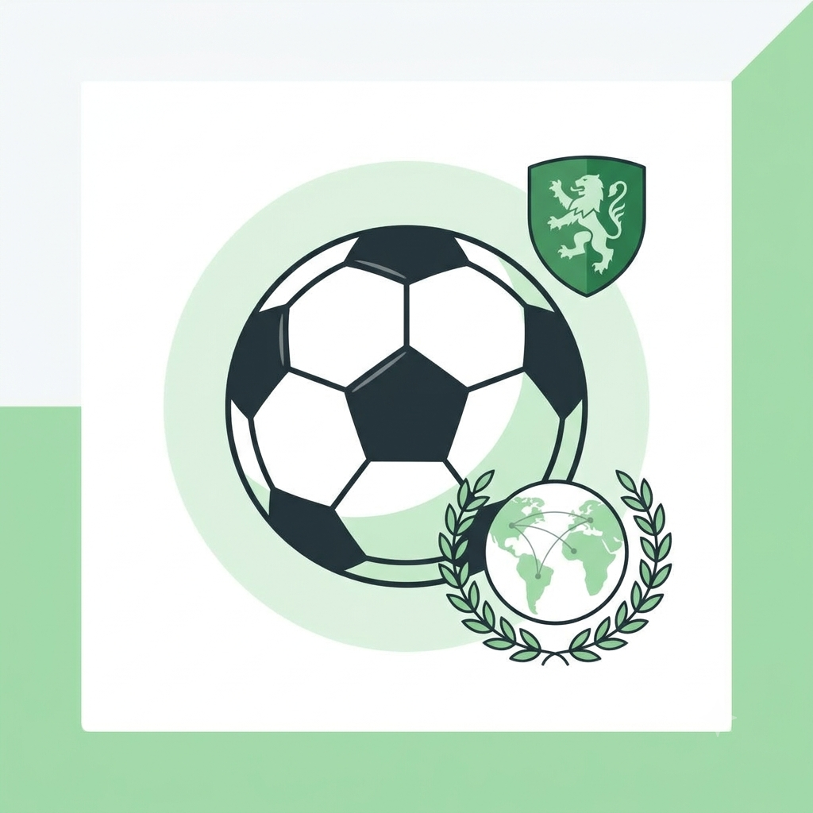

A Origem do Futebol Moderno
Por: Valdemar de Souza Junior
O futebol moderno foi regulamentado na Inglaterra em 1863, com a criação da Football Association. Desde então, tornou-se o esporte mais popular do planeta!
Fonte: FIFA
Curiosidades, histórias e fatos marcantes do esporte mundial

Por: Valdemar de Souza Junior
O futebol moderno foi regulamentado na Inglaterra em 1863, com a criação da Football Association. Desde então, tornou-se o esporte mais popular do planeta!
Fonte: FIFA

Por: Valdemar de Souza Junior
Em 1891, James Naismith inventou o basquete usando duas cestas de pêssegos pregadas em uma sacada. Toda vez que alguém marcava, precisavam subir de escada para pegar a bola!
Fonte: NBA History

Por: Valdemar de Souza Junior
A distância oficial foi estabelecida nos Jogos Olímpicos de Londres em 1908. A prova começou no Castelo de Windsor e terminou bem em frente ao camarote da família real.
Fonte: Comitê Olímpico Internacional

Por: Valdemar de Souza Junior
Acredita-se que a pontuação do tênis era baseada nos mostradores de um relógio (15, 30 e 45 minutos). Mais tarde, o 45 virou 40 por ser mais rápido de pronunciar em francês.
Fonte: ITF

Por: Valdemar de Souza Junior
A natação está presente em todas as edições dos Jogos Olímpicos Modernos desde 1896. No início, as provas eram disputadas em águas abertas, até no mar gelado!
Fonte: World Aquatics

Por: Valdemar de Souza Junior
Criado em 1895 por William G. Morgan, o vôlei originalmente se chamava "Mintonette". O objetivo era criar um esporte de menos impacto do que o basquete para adultos.
Fonte: FIVB